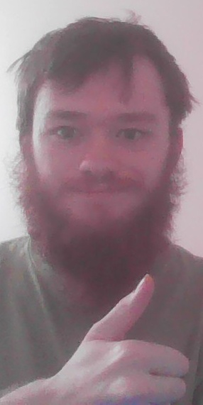
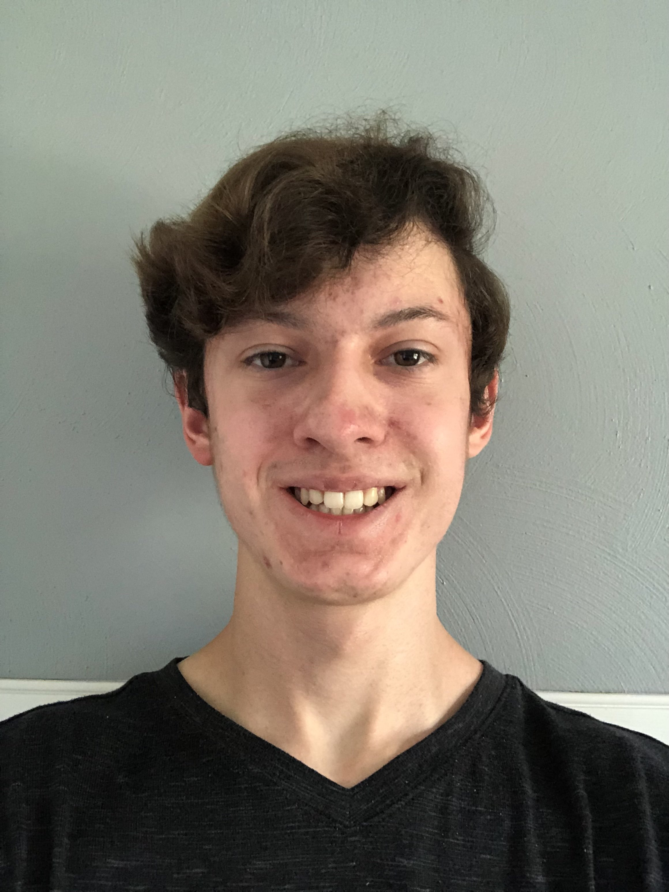

Finding the right teammate for your videogame can be frustrating- randomized matchmaking can result in undesirable or toxic teammates that ultimately ruin your gaming experience. With Game Party Finder, gamers can search for or create their own parties based on the game, region, skill levels, and more. By using this website, creating teams is done easier and more effectively, allowing for the optimal gaming experience.
There are many games that encourage teamwork, but don't offer a "looking for group" feature. This website will help gamers based on what game they're playing, any team specifications they're looking for, and any other game specific criteria.
Our website is aimed at gamers who either want to get the most out of working together in a team focused game, avoid the variance of queuing with randoms, or just want to meet a new group of people to play with. Whatever the player wants to get out of joining a party, they are likely to find a party that meets their expectations and allows them to get the most enjoyment out of whatever game they want to party up in. Our goal is to allow gamers to find a safe, reliable place to meet new people, accomplish their gaming goals, and overall have a good time.
Our Game Party Finder website will solve the problem by giving gamers a place where they can search for and create parties that meet their interests and needs for a specific game.
Elijah Joaquim is a Computer Science Major at Old Dominion University.
He likes to read fantasy novels and play games in his free time. In
the future he wants to help work on and design video games.
He is a Computer Science major that loves to play games and would like to try to make games in the future. 
Jon Fisher is a senior at Old Dominion University majoring in Computer
Science and minoring in I.T. He enjoys to play video games, play the
piano, and draw.

Joshua Renn is a Senior at Old Dominion University majoring in Computer Science. He currently works in the public school system in the Tech department. In his free time, he builds terrariums and is on his 30th Elden Ring playthrough.
“All Categories.” Twitch, 14 Apr. 2025, www.twitch.tv/directory?sort=VIEWER_COUNT.
Clement, Jessica. “Topic: Video Gaming Worldwide.” Statista, 3 June 2024, www.statista.com/topics/1680/gaming/.
“Looking for Group.” Overwatch Forums, us.forums.blizzard.com/en/overwatch/c/looking-for-group/13. Accessed 26 Feb. 2025.
“Marvel Rivals.” The Game Statistics Authority, 9 Apr. 2025, activeplayer.io/marvel-rivals/.
Neonkiler99. Tom Clancy’s Rainbow Six Siege Wallpaper. 11 June 2014. DeviantArt, https://www.deviantart.com/neonkiler99/art/Tom-Clancy-s-Rainbow-Six-Siege-Wallpaper-459995305. Accessed 26 Feb. 2025.
“Tom Clancy’s Rainbow Six Siege.” The Game Statistics Authority, 9 Apr. 2025, activeplayer.io/tom-clancys-rainbow-six-siege/.
“Video Game Market Size, Share and Growth Report, 2030.” Grand View Research, 2023, www.grandviewresearch.com/industry-analysis/video-game-market.